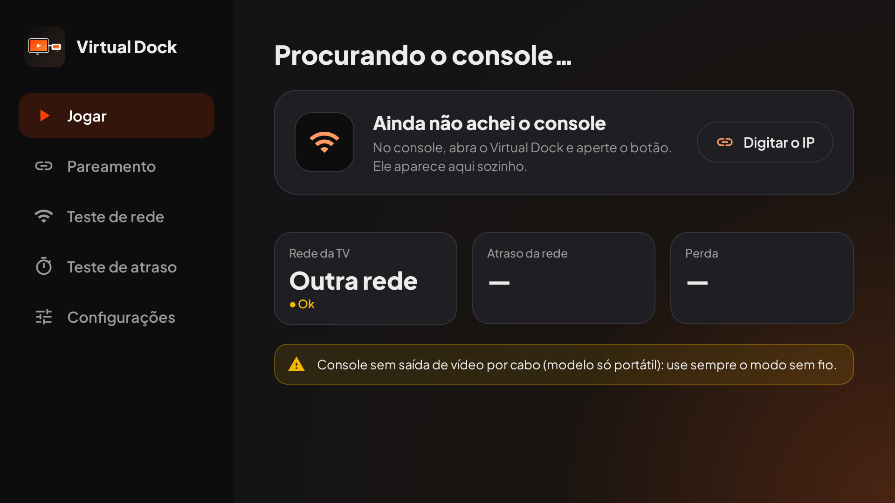

Veja seu Switch na TV, sem fio ou pelo cabo.
O Virtual Dock recebe a imagem do seu Switch pela rede Wi-Fi e mostra na TV Android. Quando você encaixa o console na base, a TV passa a mostrar a imagem em 1080p pelo HDMI, sem app nenhum.
Gratuito. Para Switch com Atmosphère e com o SysDVR instalado.
Funciona em Android TV, Google TV, Fire TV Stick e TV Box.
O que o Virtual Dock faz
Tudo é configurado no próprio Switch e na TV. Você não precisa editar arquivos.
Modo automático
Na base, o Switch transmite pelo cabo HDMI (1080p). Na mão, transmite pelo Wi-Fi (720p). A troca acontece sozinha, sem reiniciar.
Pareamento sem câmera
A TV encontra o Switch sozinha na mesma rede. Se preferir, digite o IP que aparece no console.
Teste de rede
Antes de jogar, o app mede o Wi-Fi e diz se a conexão está boa para transmitir.
Perfis por jogo
Você escolhe modo e prioridade para cada jogo. Os ajustes ficam salvos.
Apagar a tela
A tela do Switch pode ficar apagada durante a transmissão, para economizar bateria.
Overlay dentro do jogo
Com o Tesla instalado, você liga ou desliga a transmissão sem sair do jogo.
Como fica na TV
Captura real do app na Android TV.

Como instalar
São duas partes: colocar os arquivos no Switch e instalar o app na TV.
1. No Switch (cartão SD)
- Baixe o SysDVR (versão 6.x, o arquivo
SysDVR.zip) em github.com/exelix11/SysDVR/releases. Não use o pacote "USB-Only". - Descompacte o SysDVR na raiz do cartão SD. Ele cria as pastas
atmosphere,configeswitch. - Copie os arquivos do Virtual Dock para a mesma raiz, mesclando as pastas. Os caminhos são:
switch/VirtualDock/VirtualDock.nro: o appatmosphere/contents/4200000000004A54/: o módulo de fundo, que troca o modo sozinhoswitch/.overlays/VirtualDock.ovl: o overlay (opcional, precisa do Tesla)
- Quando o Windows perguntar sobre arquivos com o mesmo nome, escolha Não copiar para manter os que já estão no cartão.
- Reinicie o Switch. O SysDVR leva uns 20 segundos para começar depois de ligar.
Baixar o pacote do Virtual Dock para o Switch (.zip). Descompacte e copie as pastas para a raiz do cartão SD.
2. Na TV
- Baixe o arquivo Virtual-Dock-TV.apk e envie para a TV.
- Na TV, libere a instalação de apps desconhecidos para o gerenciador de arquivos: Configurações → Privacidade de dispositivo (ou Segurança) → Apps desconhecidos.
- Abra o APK com um gerenciador de arquivos (por exemplo, X-plore ou File Commander), ou envie pelo app Send Files to TV.
- Instale. O app aparece na tela inicial como Virtual Dock.
No Fire TV Stick, use o app Downloader para abrir o link do APK.
3. Parear e jogar
- Abra o Virtual Dock no Switch uma vez. O cartão grande mostra o modo atual: Modo Sem Fio · 720p ou Modo Cabo · 1080p.
- Abra o Virtual Dock na TV. Se o Switch aparecer sozinho, aperte Jogar agora.
- Se não aparecer, escolha Digitar o IP e use o endereço que aparece na tela do Switch (exemplo:
192.168.0.20 : 9911). - Para abrir o app no Switch durante um jogo, segure R ao abrir o jogo e escolha Virtual Dock.
Na base (cabo)
Encaixe o Switch na base com o HDMI ligado na TV e troque a entrada da TV para o HDMI. Se a TV mostrar "Switch conectado por cabo", isso é normal, não é erro.
Antes de instalar
O que você precisa
- Switch com Atmosphère (desbloqueado) e cartão SD.
- SysDVR 6.x instalado no Switch.
- TV Android TV, Google TV, Fire TV Stick ou TV Box, na mesma rede Wi-Fi do Switch.
- Para o modo cabo: a base original, ou um adaptador USB-C para HDMI compatível com Switch, com carga USB-C (PD) e a fonte original.
Limites
- Switch Lite não tem saída de vídeo por cabo. Nele só funciona o modo sem fio.
- No modo sem fio a imagem é 720p, com atraso de 80 a 150 ms.
- Alguns jogos bloqueiam a captura de imagem.